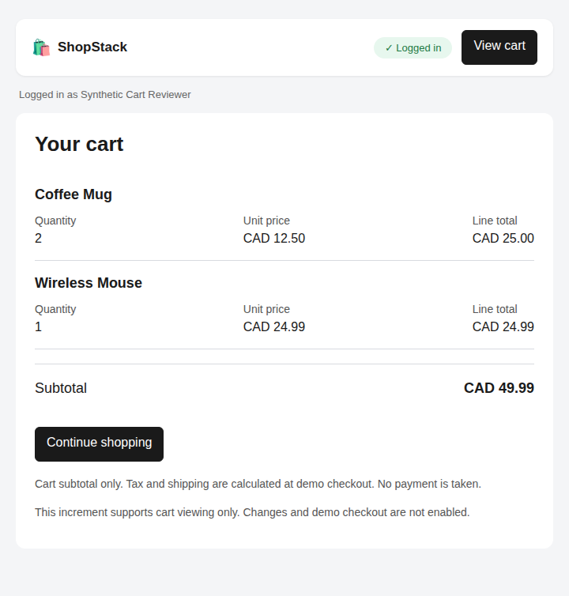

01 / ShopStack
A cart should show
what is actually saved.
A business analysis case study connecting a missing cart-review journey to requirements, a smaller delivery slice and executed recovery checks.

The missing customer journey
The storefront supported browsing, login and add-to-cart requests, but customers had no cart page to check their saved selections or totals. A failed request could also be confused with an empty cart.
I explored the broader cart-management journey, then narrowed the implemented slice to viewing a saved cart and recovering from retrieval errors.
Turn uncertainty into explicit rules
I asked questions through simulated sponsor, product, developer, tester and UX roles. I refined business rules and acceptance scenarios, and connected the gap register, process diagrams, wireframes and test families.
A failed retrieval is not an empty cart.
The interface needs distinct states. Retry should retrieve the saved cart without adding, updating or removing selections.
My recorded decisions included a 10-unit limit per product/variant, a 30-day cart-retention rule and checking an unknown update before retrying it. Those broader rules are not all implemented in the read-only slice.
The delivery boundary was explicit: cart viewing, ordinary-empty and expired-cart states, authentication handling and non-mutating read retry. I documented dependencies and open questions for later mutation work.
What the evidence showed
The same checks passed locally and in CI on embedded PostgreSQL and PostgreSQL 17. Repeated execution is not additional scenario coverage.
A controlled cart-read failure showed an error and Retry, without claiming the cart was empty. After recovery, two mugs at CAD 12.50 and one mouse at CAD 24.99 produced a CAD 49.99 subtotal. Saved-state snapshots confirmed unchanged items and retention metadata.
The outcome was a tested slice, not a complete checkout.
The evidence supports the demonstrated cart-view and retrieval-recovery behaviour. It does not establish customer acceptance or a production release.
Follow the analysis
Limits of this work
- Stakeholder discussions and approvals were simulated. Independent customer research and business acceptance remain outstanding.
- AI agents assisted with drafting, code and test execution. This was not independently coded or independently validated by me.
- Quantity changes, removal, logout invalidation, checkout and prolonged mutation recovery are outside the verified slice. Exact retention boundaries and full accessibility remain unverified.
- The legacy cart-age migration remains a trade-off. Tax, shipping, real payments, fulfilment and stock reservation were not delivered in this slice.
- The source review records a failed AWS credential setup, not a production release. Passing local/CI checks does not remove those release limits.